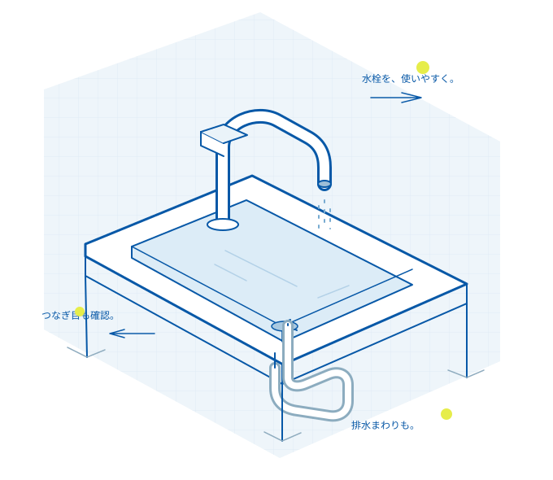

部品で直せるか、
本体の交換が必要か。
蛇口から水が落ちる場合でも、パッキンの交換で済むこともあれば、本体の傷みが原因のこともあります。製品の種類と状態を確かめて、修理と交換の選択肢をご説明します。
作業に入る前に、必要な部品と費用を見積もります。追加の作業が必要になった場合も、その都度、内容と金額を確認してから進めます。
02 / よくあるご相談
蛇口・水栓・排水のご相談
たとえば / 蛇口のパッキン交換
- 作業料金
- 5,500円
- 出張費
- 2,200円
- ここまでの合計
- 7,700円＋部品代
税込の料金設定例です。追加作業・駐車料金は別途確認します。
04 / 相談から作業まで
見積もりを確認してから作業へ
- 1
状態を聞く
場所、症状、使っている製品を確認。分かる範囲で構いません。
- 2
現地で説明する
原因と選べる方法を説明し、作業前に見積もりを提示します。
- 3
了承後に作業する
変更が必要なときは再度確認。終わったら動作を一緒に確かめます。
相談の前に
場所と症状を選んで、
相談の準備を。
相談メモはご自身で保存できます。修理の受付・送信は行いません。